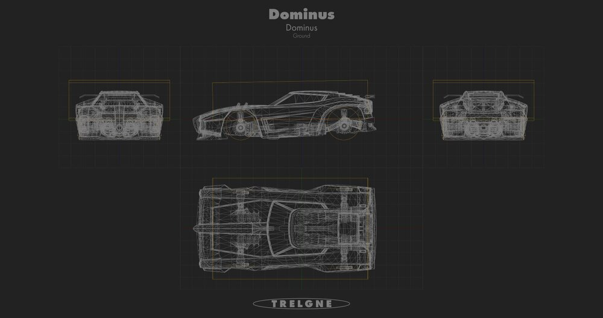

Leírás:
A Dominus egy 2015. augusztus 13-án kiadott jármű, amelyet DLC-ként csak a Supersonic Fury DLC Pack-ből lehetett beszerezni, mielőtt ingyen kiválthatóvá tették volna vásárlás nélkül.
A Dominus hitbox, amelyet más autók használnak, ezen alapul.
Hitbox:
